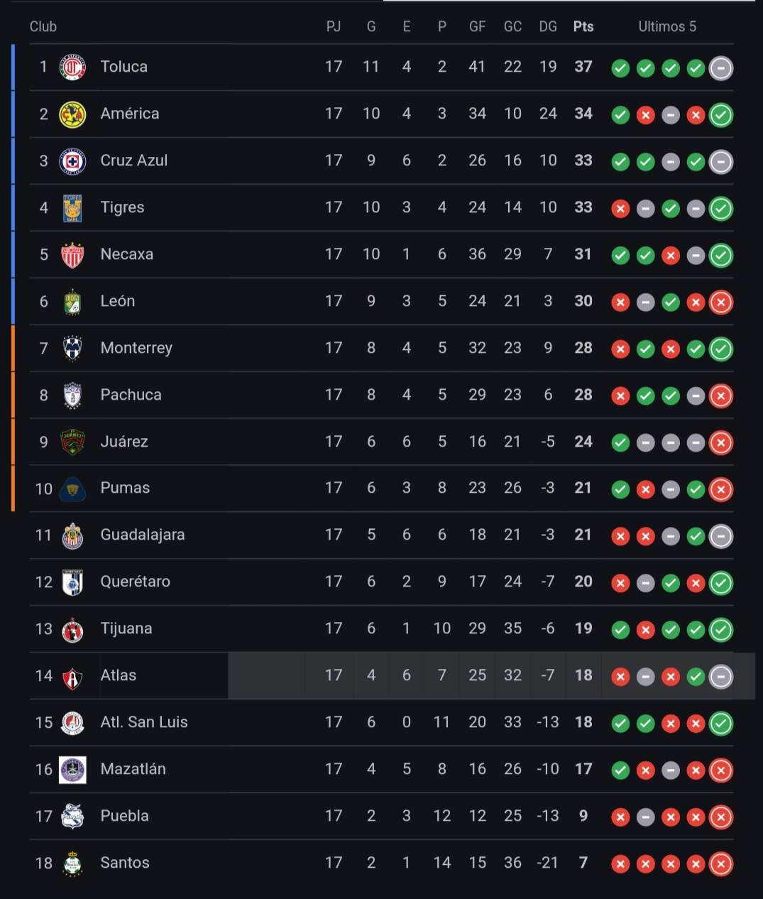
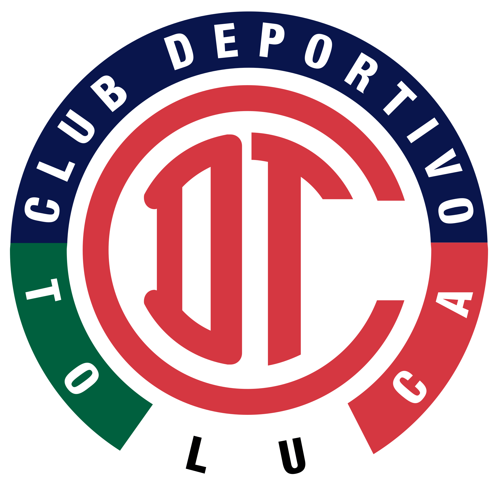
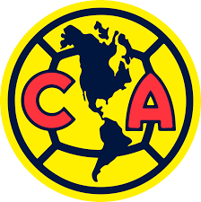

DESCRICIÓN:
•La Primera División de México también conocida simplemente como Liga MX o por motivos de patrocinio Liga BBVA MX, es la máxima categoría masculina del sistema de ligas de México y la principal competición de clubes del país.
Tabla General
Esta es la tabla general de la semana
El lider general es el Toluca
¿En que consiste la liga MX?
En cada torneo, los equipos juegan en la fase regular todos contra todos, y los primeros ocho equipos de la tabla general clasifican directamente a la Liguilla (playoffs). Los equipos que no se clasifican directamente a la Liguilla, pero que terminan entre los puestos 7 y 10 de la tabla general, participan en el Play-In, donde se enfrentan en un partido para determinar quiénes se unen a la Liguilla.
Equipos de la liga MX
1-America
El Club de Fútbol América S. A. de C. V. es un equipo de fútbol profesional de la Primera División de México. Fue fundado el 12 de octubre de 1916 en la Ciudad de México por un grupo de estudiantes encabezados por el jugador Rafael Garza Gutiérrez y el profesor y entrenador Eugenio Cenoz.
2-Guadalajara
El Club Deportivo Guadalajara, S. A. de C. V.,conocido simplemente como Guadalajara y coloquialmente como Chivas, es un club de fútbol profesional mexicano con sede en Guadalajara, Jalisco. Fue fundado oficialmente el 8 de mayo de 1906 por el comerciante y agente de ventas belga Edgar Everaert con el nombre de Unión Football Club, mismo año en el que comenzó su actividad futbolística.

3-Cruz Azul
El Club de Fútbol Cruz Azul,mejor conocido como Cruz Azul, es un club profesional de la Primera División del fútbol mexicano, con sede en la Ciudad de México. Junto con América, Guadalajara y Universidad Nacional, es uno de los llamados «cuatro grandes del fútbol mexicano».